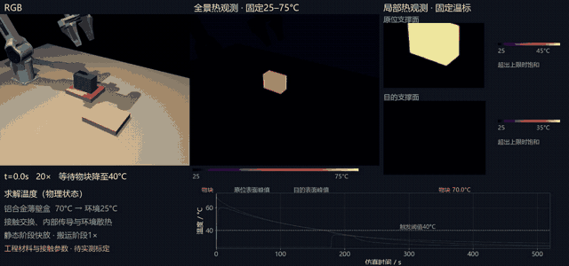
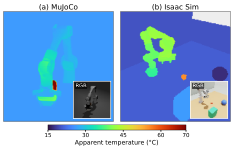

月面装配
受照角热胀后无法装入，局部喷冷后再次试装。

工件移开，余热仍在。下一次接触面对的是已经改变的热状态。
从装配、加工到维修，看热状态如何限制一次操作。
受照角热胀后无法装入，局部喷冷后再次试装。
焊缝间隙和散热条件变化，调整热输入与进给。
背面散热拖慢升温，提高热风档位后再取件。
通电找热点，换件后再次上电检查。
剪带后仍受阻，局部加热后以相同限力复试。
以上为四个连续控制环境与一个轨道维修参考演示。视频展示参考控制过程，不代表训练策略的实机表现。材料和工艺参数为可校准的工程设定。
让接触、分离、再接触持续改变温场。机器人、工件和支撑保留各自的热历史，输出同步 RGB 与可见表面温度。
对齐图像、温度矩阵、动作、本体状态与任务事件，保留配置、源码版本和检查点，支持生成、回放与结果核对。
面向高性能高保真物理仿真器和工业级数据平台建设，TRR 从热交互切入，提供仿真与数据组件。对应需求见《面向柔性制造的具身智能综述》§5.2。
几何、材料、温场、机器人和相机。
运动与热状态按同一物理时间推进。
温度条件、接触、任务事件和失败原因。
同步观测、操作记录与可恢复状态。
动态交互与学习实验采用 MuJoCo 工作流；Isaac Sim 提供成像示例，两后端的动态功能不作等同表述。LeRobot、robomimic 格式已有小批量加载检查。
当前是组件级研究实现。工艺质量判据需要实测标定，产线验证、跨企业权限与隐私保护需另行建设；本页不宣称覆盖任意柔性体或完整电场过程。


论文配对基准包含6项任务、2,224组条件对，共4,448条轨迹：相同运动分别使用固定温场与动态温场。该基准与上方五个新场景分别统计。
固定温场下通过的444条运动，在动态温场下出现温度违规。
完整可见RGBT历史的安全选择率为91.7%，匹配的末帧重复对照为75.0%。
更换加热流程后，动态训练比静态训练高50个百分点。实验采用区域选择与共享反馈执行器。
上述结果来自论文各自的基准与学习数据，不能解释为五段新视频的策略成功率。
Biwen Yang、Zhe Cao、Jin Zhang、Haoyang Sun、Zonglu Hu、Jintao Zhao、Zhehao Zhang、Kaizheng Chen、Chengyi Liu、Chengyu Wei、Siyuan Wu、Ruiheng Zhang
北京理工大学 · 炽智实验室 · 通讯作者：Ruiheng Zhang